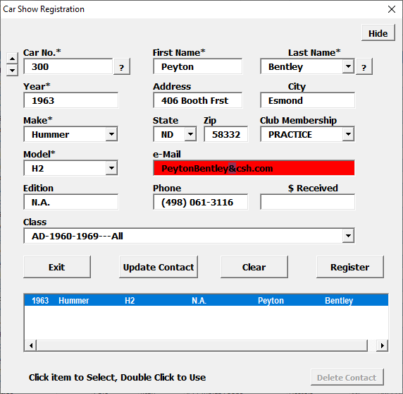

Car Show Helper Registration Dialog "*"
indicates a required field.
Registration is a feature-rich form. Practice first before
using at a show.
Unless you are a skilled typist, it is difficult to keep up with
day-of-show registration.
Possible solutions:
Divide registration among several several computers assigning
a range of car numbers to each user, e.g. 1-99 to user1 100-199 to
user2 etc. and merge the registration sheet after registration is
closed.
Use the Data Tools->Import/Export to load the results of
on-line pre-registration. Encourage or require on-line pre-registration
Dialog Items
Hide/Show - roll/unrolls the Registration dialog so you can see the data in the sheet.
Car No.- Displays the car number to register the current car.
Its behavior depends on the Car Numbers Setting
Use Old - Defaults to the next available car number. Imports
the old car number from the item selected in the search field.
Use New - Displays the next available car number.
Enter Manually- Displays a blank field.
The Spinner bumps the car number by +/- 1
Left click the "?" button to search the contacts sheet cars
with the current car number
Right click the "?" button get the next available car number.
The Car No. field turns red if a car is already registered
with the current car number. If the Register button is clicked, the existing registered car
will be overwritten
Year - The year of manufacture.
Make - The manufacturer
Model - The model name
Edition - Any special characteristic
Class - The appropriate class for the car. Not required for
popular vote shows.
First Name - The owner's first name
Last Name - The owner's second name. Enter a name or use the
pull-down list of existing contacts. Click the "?" to search the contacts list by last
name.
Address - The street address
City -
State - Enter or select from pull-down list
Zip - Zip codes are used by the Data Tools->Plot Travel
Distances tool.
Club Membership - The club list is editable in the Misc Data
sheet.
e-Mail - email address field will turn red if improperly
formed. Email addresses are not validated.
Phone - phone numbers are formatted for you
$ Received - registration fees etc.
Exit - close the dialog
Update Contact - replace the selected contact information with
new or edited data
Clear - clears the form
Register - Adds the registrant information to the registration
sheet. Grayed if required data is absent, red if registrant is a
duplicate. If clicked, the existing registered car will be
overwritten.
Search Results - a text field showing ther results of a car
number or last name search of the contacts list.
Delete Contact - removes the selected contact from the
contacts list, e.g. an owner has sold or replaced a car that is in the
contacts list or just doesn't want to be bothered by you again.